Spatial correlation modeling of environmental extremes with HazardMaps
Maria Valentina Clavijo Mesa
2026-10-06
Source:vignettes/tutorial.Rmd
tutorial.RmdOverview
HazardMaps provides a unified workflow for spatial dependence modeling of environmental extremes — from raw gridded datasets to spatially coherent pseudoscenarios. The package supports regular longitude-latitude grids (e.g. ERA5, Copernicus) and rotated curvilinear grids (e.g. EURO-CORDEX) without any change in the user interface.
Example dataset. This vignette uses daily maximum
wind-gust speed over Northeast Italy as a running example. The workflow
applies unchanged to any gridded environmental variable: precipitation,
temperature, wave height, etc. The package was developed as part of the
research presented in Clavijo Mesa et al. (2026a, 2026b), whose datasets
are included as built-in example files. Users who need to prepare raw
Copernicus or EURO-CORDEX downloads before using the package can find
helper R scripts in inst/scripts/, accessible via
system.file("scripts", package = "HazardMaps").
Two datasets are used throughout:
- Copernicus — regular longitude-latitude grid, ERA5-based, 195 cells, 1994–2021
- EURO-CORDEX — rotated curvilinear grid, RCM simulation, 1872 cells (1568 land), 1970–2005
The workflow has seven steps:
- Ingest and prepare data
- Select extreme-event days
- Fit marginal distributions
- Estimate spatial dependence
- Fit copula and stochastic field models
- Simulate pseudoscenarios
- Validate with cluster-size statistics
Step 1 — Ingest and prepare data
The starting point is a CF-convention NetCDF file.
hm_read_netcdf() reads it and detects the grid type
automatically — no configuration needed.
wind_cop <- hm_read_netcdf(
system.file("extdata", "Copernicus_dailymax_1994_2021.nc",
package = "HazardMaps"),
var = "i10fg"
)
wind_euc <- hm_read_netcdf(
system.file("extdata", "EuroCordex_wsgsmax_1970_2005.nc",
package = "HazardMaps"),
var = "wsgsmax"
)
wind_cop$meta$grid_type
#> [1] "regular"
wind_euc$meta$grid_type
#> [1] "rotated"hm_standardize_coords() flattens the coordinate arrays
into a single data.frame with one row per grid cell — the format all
downstream functions expect. hm_decode_time() converts
CF-style time values (e.g. “days since 1970-01-01”) to R
Date objects.
wind_cop <- hm_standardize_coords(wind_cop)
wind_cop <- hm_decode_time(wind_cop)
wind_cop <- hm_get_grid_geometry(wind_cop)
wind_euc <- hm_standardize_coords(wind_euc)
wind_euc <- hm_decode_time(wind_euc)
wind_euc <- hm_get_grid_geometry(wind_euc)
cat("Copernicus: ", nrow(wind_cop$coords), "cells |",
length(wind_cop$time), "days\n")
#> Copernicus: 195 cells | 10226 days
cat("EURO-CORDEX:", nrow(wind_euc$coords), "cells |",
length(wind_euc$time), "days\n")
#> EURO-CORDEX: 1872 cells | 13149 dayshm_plot_spatial_domain() visualises the study area. It
draws the correct cell geometry automatically — straight lines for
regular grids, curvilinear lines for rotated grids.
hm_plot_spatial_domain(wind_cop, dataset = "copernicus",
title = "Copernicus domain", show_map = TRUE)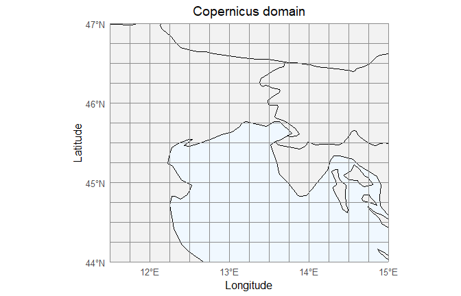
Copernicus regular grid domain.
hm_plot_spatial_domain(wind_euc, dataset = "eurocordex",
title = "EURO-CORDEX domain", show_map = TRUE)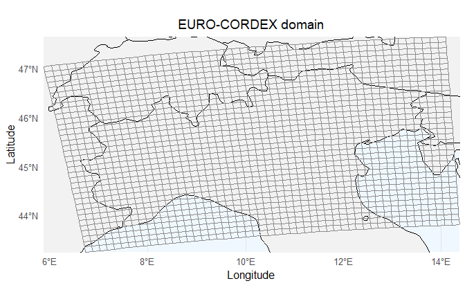
EURO-CORDEX rotated grid domain.
Step 2 — Select extreme-event days
Only days with at least one grid cell at or above a threshold are kept. Everything below the threshold is noise for dependence modeling purposes.
wind_cop_ext <- hm_select_extreme_events(wind_cop, threshold = 25)
wind_euc_ext <- hm_select_extreme_events(wind_euc, threshold = 25)
cat("Copernicus: ", wind_cop_ext$meta$filter$n_days_retained,
"extreme-event days out of", wind_cop_ext$meta$filter$n_days_original, "\n")
#> Copernicus: 382 extreme-event days out of 10226
cat("EURO-CORDEX:", wind_euc_ext$meta$filter$n_days_retained,
"extreme-event days out of", wind_euc_ext$meta$filter$n_days_original, "\n")
#> EURO-CORDEX: 5635 extreme-event days out of 13149hm_plot_exceedance() maps how often each cell exceeded
the threshold over the full period.
hm_plot_exceedance(wind_cop, threshold = 25, metric = "count",
dataset = "copernicus", show_map = TRUE,
title = "Wind-gust exceedance count — Copernicus")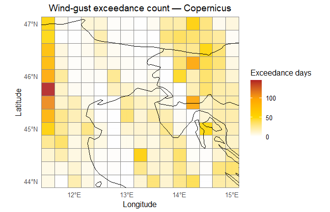
Exceedance count — Copernicus.
hm_plot_exceedance(wind_euc, threshold = 25, metric = "count",
dataset = "eurocordex", show_map = TRUE,
title = "Wind-gust exceedance count — EURO-CORDEX")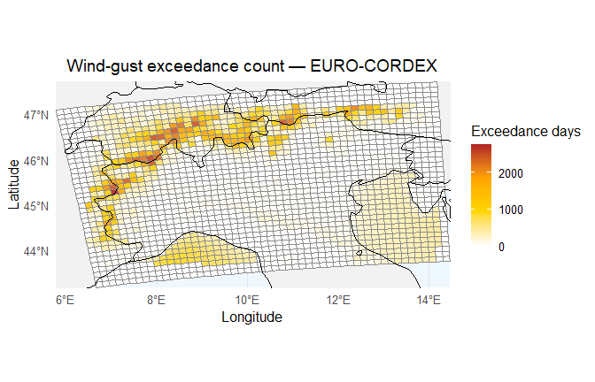
Exceedance count — EURO-CORDEX.
hm_plot_exceedance_time() shows whether the frequency of
extreme events changes over the observation period.
hm_plot_exceedance_time(wind_cop, threshold = 25, by = "year",
title = "Extreme-event days per year — Copernicus")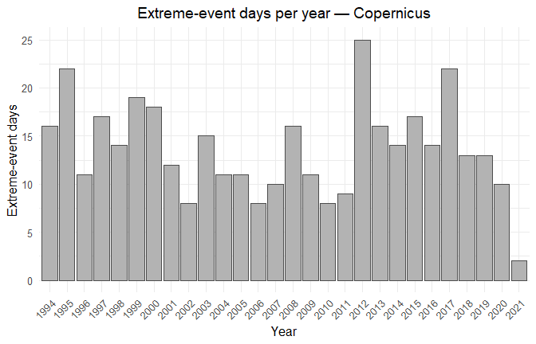
Extreme-event days per year — Copernicus.
hm_plot_exceedance_time(wind_euc, threshold = 25, by = "decade",
title = "Extreme-event days per decade — EURO-CORDEX")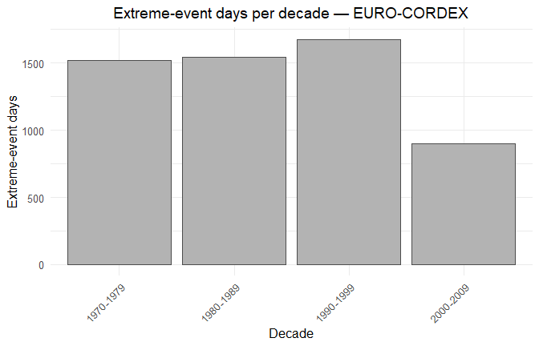
Extreme-event days per decade — EURO-CORDEX.
Step 3 — Fit marginal distributions
Before estimating spatial dependence, each cell needs its own marginal distribution. This separates the marginal behavior from the dependence structure — a standard approach in multivariate extreme-value analysis.
hm_to_matrix() reshapes the data into a time-by-cell
matrix. hm_filter_land_cells() removes columns with no
valid data — mandatory for EURO-CORDEX, whose domain includes sea
cells.
obs_cop <- hm_to_matrix(wind_cop_ext)
obs_euc <- hm_to_matrix(wind_euc_ext)
obs_cop <- hm_filter_land_cells(obs_cop)
obs_euc <- hm_filter_land_cells(obs_euc)
cat("Copernicus matrix :", nrow(obs_cop), "days x", ncol(obs_cop), "cells\n")
#> Copernicus matrix : 382 days x 195 cells
cat("EURO-CORDEX matrix:", nrow(obs_euc), "days x", ncol(obs_euc), "cells\n")
#> EURO-CORDEX matrix: 5635 days x 1568 cellshm_fit_marginals() fits six candidate families to each
cell by maximum likelihood and selects the best by BIC. The six families
are: Weibull, Gamma, Lognormal, Gumbel, Zero-truncated Gaussian, and
Zero-truncated Laplace.
marginals_cop <- hm_fit_marginals(obs_cop, criterion = "bic")
marginals_euc <- hm_fit_marginals(obs_euc, criterion = "bic")
cat("Copernicus — best distribution per cell:\n")
#> Copernicus — best distribution per cell:
print(sort(table(marginals_cop$best_dist), decreasing = TRUE))
#>
#> weibull gamma tnorm lnorm gumbel
#> 124 44 17 9 1
cat("\nEURO-CORDEX — best distribution per cell:\n")
#>
#> EURO-CORDEX — best distribution per cell:
print(sort(table(marginals_euc$best_dist), decreasing = TRUE))
#>
#> weibull tnorm gamma lnorm tlaplace
#> 1138 284 112 23 11What to look for. Weibull dominates in both datasets — this is expected for wind-gust extremes. The spatial map below shows which cells deviate from Weibull and why: coastal cells and Alpine valleys tend to favour Gamma or Zero-truncated Gaussian due to their different tail behavior.
hm_plot_best_dist(wind_cop_ext, marginals_cop,
title = "Best-fitting marginal — Copernicus",
show_map = TRUE)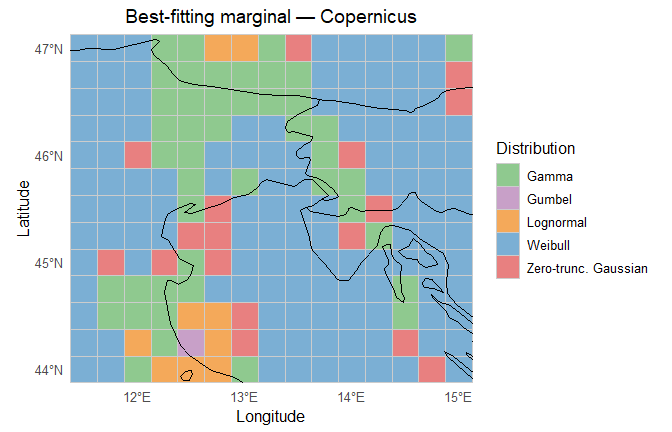
Best-fitting distribution at each cell — Copernicus.
wind_euc_land <- wind_euc_ext
wind_euc_land$coords <- attr(obs_euc, "coords")
hm_plot_best_dist(wind_euc_land, marginals_euc,
title = "Best-fitting marginal — EURO-CORDEX",
show_map = TRUE)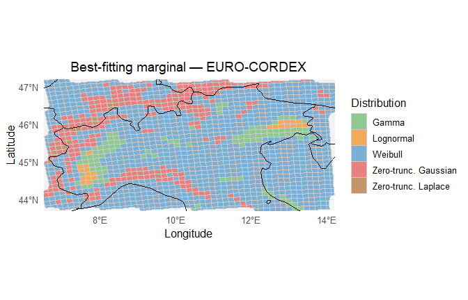
Best-fitting distribution at each cell — EURO-CORDEX.
hm_plot_dist_frequency(marginals_cop,
title = "Distribution frequency — Copernicus")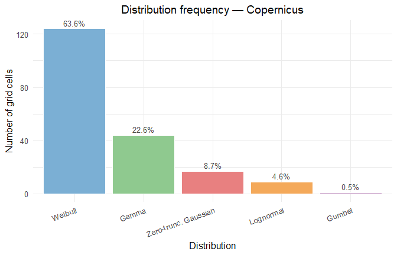
Frequency of best-fitting families across all cells.
hm_plot_dist_frequency(marginals_euc,
title = "Distribution frequency — EURO-CORDEX")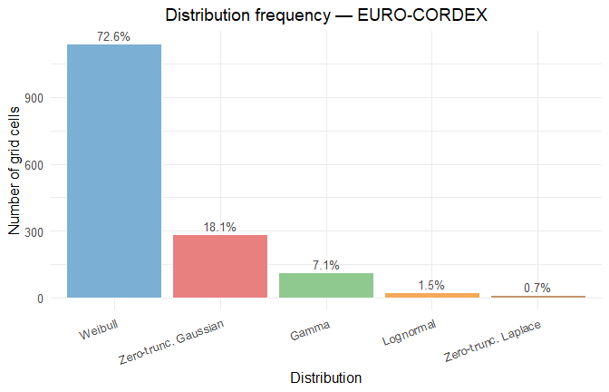
Frequency of best-fitting families across all cells.
The Probability Integral Transform (PIT) converts each observation to
the uniform scale using its fitted CDF, then to Gaussian scores via the
probit transform. The Gaussian scores (Z) feed the spatial
dependence estimation; the uniform values (U) feed the
copula.
pit_cop <- hm_pit_transform(obs_cop, marginals_cop)
pit_euc <- hm_pit_transform(obs_euc, marginals_euc)
cat("Copernicus — cells transformed:", pit_cop$n_cells_ok,
"| skipped:", pit_cop$n_cells_skipped, "\n")
#> Copernicus — cells transformed: 195 | skipped: 0
cat("EURO-CORDEX — cells transformed:", pit_euc$n_cells_ok,
"| skipped:", pit_euc$n_cells_skipped, "\n")
#> EURO-CORDEX — cells transformed: 1568 | skipped: 0Step 4 — Estimate spatial dependence
The empirical spatial correlation is measured with Kendall’s τ, which is rank-based and does not assume any distribution for the data.
hm_distance_matrix() computes the great-circle distance
in kilometres between every pair of cells.
hm_empirical_kendall() estimates the pairwise Kendall
correlation from the Gaussian scores.
Computational note. For large grids (> 500
cells), computing all N(N-1)/2 pairs is expensive. Use
cell_idx to pass a representative subsample — as done here
for EURO-CORDEX.
distances_cop <- hm_distance_matrix(attr(obs_cop, "coords"))
kendall_cop <- hm_empirical_kendall(pit_cop$Z)
land_idx <- which(!is.na(marginals_euc$best_dist))[1:50]
distances_euc <- hm_distance_matrix(attr(obs_euc, "coords")[land_idx, ])
kendall_euc <- hm_empirical_kendall(pit_euc$Z, cell_idx = land_idx)hm_empirical_correlogram() bins the pairwise
correlations by distance to produce a smooth summary of how correlation
decays with separation.
corg_cop <- hm_empirical_correlogram(kendall_cop, distances_cop, n_bins = 20)
corg_euc <- hm_empirical_correlogram(kendall_euc, distances_euc, n_bins = 15)
hm_plot_correlogram(corg_cop,
title = "Empirical correlogram — Copernicus")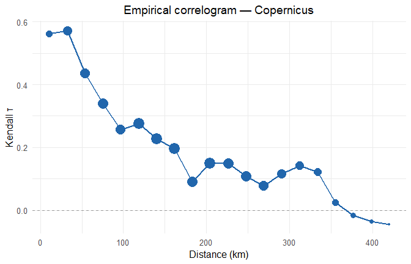
Empirical spatial correlogram for both datasets.
hm_plot_correlogram(corg_euc,
title = "Empirical correlogram — EURO-CORDEX (50-cell subsample)")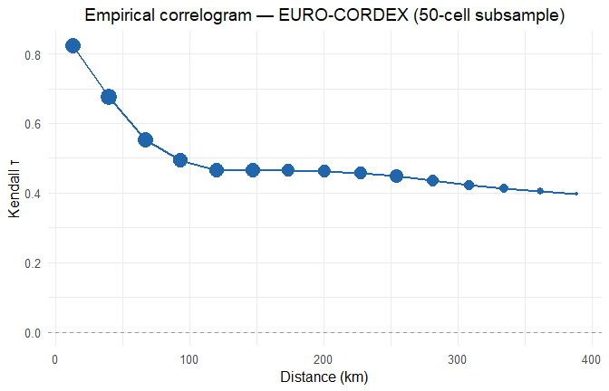
Empirical spatial correlogram for both datasets.
Interpretation. Correlation is highest at short distances (~0.75–0.80) and decreases steadily with increasing separation, reaching near-zero beyond 250–300 km. This pattern confirms strong local spatial dependence and weak long-range dependence — consistent with synoptic-scale windstorm events that affect areas of 50–200 km.
Step 5 — Fit dependence models
Two model families are available and compared.
Copula models
Vine copulas decompose the joint distribution of all cells into a cascade of bivariate copulas. Three structures are available: C-vine (one central node drives all others), D-vine (a chain structure), and Gaussian (elliptical baseline).
uniform_small <- pit_cop$U[, 1:30]
marginals_small <- marginals_cop[1:30, ]
copula_cvine <- hm_fit_copula(uniform_small, type = "cvine")
copula_dvine <- hm_fit_copula(uniform_small, type = "dvine")
copula_gauss <- hm_fit_copula(uniform_small, type = "gaussian")
cat("Cells:", copula_cvine$n_cells,
"| Observations:", copula_cvine$n_obs, "\n")
#> Cells: 30 | Observations: 382Stochastic field model
The stochastic field approach fits a parametric covariance function directly to the empirical correlogram, then generates realisations via the Karhunen-Loève Expansion (KLE). Four covariance families are compared automatically: Matérn, Exponential, Gaussian, and Spherical.
sf_model_cop <- hm_fit_correlation_model(corg_cop)
sf_model_euc <- hm_fit_correlation_model(corg_euc)
cat("Copernicus — best:", sf_model_cop$best_family,
"| RMSE:", round(sf_model_cop$best_rmse, 4), "\n")
#> Copernicus — best: matern | RMSE: 0.0541
cat("EURO-CORDEX — best:", sf_model_euc$best_family,
"| RMSE:", round(sf_model_euc$best_rmse, 4), "\n")
#> EURO-CORDEX — best: exponential | RMSE: 0.0737
cat("\nFamily comparison — Copernicus:\n")
#>
#> Family comparison — Copernicus:
print(sf_model_cop$all_fits)
#> family rmse converged
#> 1 matern 0.054148 TRUE
#> 2 exponential 0.056362 TRUE
#> 3 gaussian 0.069971 TRUE
#> 4 spherical 0.066445 TRUE
cat("\nFitted parameters:\n")
#>
#> Fitted parameters:
print(round(sf_model_cop$best_params, 4))
#> range smoothness nugget
#> 116.4797 0.1997 0.0000How the best family is chosen. All four covariance
families are fitted by weighted least squares to the empirical
correlogram. The one with the lowest RMSE is selected automatically and
stored in model$best_family. No manual choice is
needed.
Step 6 — Simulate pseudoscenarios
Each model generates a matrix of synthetic extreme-event fields. Every row is one spatially coherent scenario — a plausible simultaneous wind-gust intensity at all grid cells.
scenarios_cvine <- hm_simulate_copula(copula_cvine, marginals_small,
n_scenarios = 500L, seed = 42L)
scenarios_dvine <- hm_simulate_copula(copula_dvine, marginals_small,
n_scenarios = 500L, seed = 42L)
scenarios_gauss <- hm_simulate_copula(copula_gauss, marginals_small,
n_scenarios = 500L, seed = 42L)
cat("Copula scenarios — dimensions:", dim(scenarios_cvine)[1], "x",
dim(scenarios_cvine)[2], "\n")
#> Copula scenarios — dimensions: 500 x 30
cat("Value range: [",
round(min(scenarios_cvine, na.rm = TRUE), 2), ",",
round(max(scenarios_cvine, na.rm = TRUE), 2), "] m/s\n")
#> Value range: [ 2.22 , 41.62 ] m/s
scenarios_sf <- hm_simulate_sf_kle(
sf_model_cop, distances_cop, marginals_cop,
n_scenarios = 500L, var_retain = 0.95, seed = 42L
)
cat("SF scenarios — dimensions:", dim(scenarios_sf)[1], "x",
dim(scenarios_sf)[2], "\n")
#> SF scenarios — dimensions: 500 x 195
cat("KLE modes retained:", attr(scenarios_sf, "k_modes"),
"| Variance explained:", round(attr(scenarios_sf, "var_explained"), 3), "\n")
#> KLE modes retained: 165 | Variance explained: 0.951
cat("Value range: [",
round(min(scenarios_sf, na.rm = TRUE), 2), ",",
round(max(scenarios_sf, na.rm = TRUE), 2), "] m/s\n")
#> Value range: [ 0.98 , 43.97 ] m/sStep 7 — Validate with cluster-size statistics
A good dependence model should reproduce the spatial footprint of observed events — not just the marginal distribution of each cell in isolation.
hm_cluster_size() counts, for each day, how many cells
simultaneously exceeded the threshold. This gives a simple but powerful
summary of the spatial extent of each event.
cluster_obs <- hm_cluster_size(obs_cop, threshold = 25,
time = attr(obs_cop, "time"))
cat("Observed spatial footprint (Copernicus):\n")
#> Observed spatial footprint (Copernicus):
print(summary(cluster_obs$cluster_size))
#> Min. 1st Qu. Median Mean 3rd Qu. Max.
#> 1.000 2.000 4.000 8.885 10.000 138.000The same statistic applied to the simulated scenarios reveals how well each model reproduces the observed footprint distribution.
cluster_cvine <- hm_cluster_size(scenarios_cvine, threshold = 25)
cluster_dvine <- hm_cluster_size(scenarios_dvine, threshold = 25)
cluster_gauss <- hm_cluster_size(scenarios_gauss, threshold = 25)
cluster_sf <- hm_cluster_size(scenarios_sf, threshold = 25)
footprint_table <- data.frame(
Model = c("Observed", "C-vine", "D-vine", "Gaussian", "SF (Matérn)"),
Mean = round(c(mean(cluster_obs$cluster_size),
mean(cluster_cvine$cluster_size),
mean(cluster_dvine$cluster_size),
mean(cluster_gauss$cluster_size),
mean(cluster_sf$cluster_size)), 2),
Median = round(c(median(cluster_obs$cluster_size),
median(cluster_cvine$cluster_size),
median(cluster_dvine$cluster_size),
median(cluster_gauss$cluster_size),
median(cluster_sf$cluster_size)), 2),
Max = c(max(cluster_obs$cluster_size),
max(cluster_cvine$cluster_size),
max(cluster_dvine$cluster_size),
max(cluster_gauss$cluster_size),
max(cluster_sf$cluster_size))
)
print(footprint_table, row.names = FALSE)
#> Model Mean Median Max
#> Observed 8.88 4 138
#> C-vine 2.22 0 24
#> D-vine 2.41 0 23
#> Gaussian 2.49 0 27
#> SF (Matérn) 8.39 6 66
all_clusters <- rbind(
data.frame(model = "Observed", size = cluster_obs$cluster_size),
data.frame(model = "C-vine", size = cluster_cvine$cluster_size),
data.frame(model = "D-vine", size = cluster_dvine$cluster_size),
data.frame(model = "Gaussian", size = cluster_gauss$cluster_size),
data.frame(model = "SF (Matérn)", size = cluster_sf$cluster_size)
)
all_clusters$model <- factor(
all_clusters$model,
levels = c("Observed", "C-vine", "D-vine", "Gaussian", "SF (Matérn)")
)
ggplot2::ggplot(all_clusters,
ggplot2::aes(x = size, colour = model)) +
ggplot2::stat_ecdf(linewidth = 0.9) +
ggplot2::scale_colour_manual(
values = c("Observed" = "black",
"C-vine" = "#2166AC",
"D-vine" = "#4DAF4A",
"Gaussian" = "#FF7F00",
"SF (Matérn)" = "#E41A1C"),
name = "Model"
) +
ggplot2::labs(
title = "Spatial footprint validation — Copernicus",
x = "Number of cells \u2265 25 m/s",
y = "Empirical CDF"
) +
ggplot2::theme_minimal(base_size = 12) +
ggplot2::theme(plot.title = ggplot2::element_text(hjust = 0.5))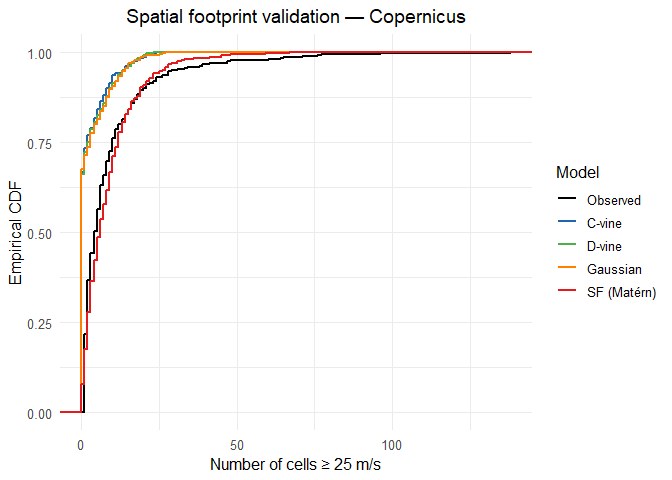
Empirical CDF of spatial footprint for observed data and four models.
How to read this plot. A model whose CDF curve lies close to the black “Observed” curve reproduces the spatial footprint well. A curve to the left means the model generates events that are too localised; a curve to the right means events that are too widespread. Use this plot to choose the model that best captures the dependence structure for your application.
Summary
| Step | Goal | Key functions |
|---|---|---|
| Step 1 | Read and standardize a gridded dataset |
hm_read_netcdf,
hm_standardize_coords, hm_decode_time
|
| Step 2 | Isolate extreme-event days |
hm_select_extreme_events,
hm_to_matrix, hm_filter_land_cells
|
| Step 3 | Fit a marginal distribution to each cell |
hm_fit_marginals,
hm_pit_transform
|
| Step 4 | Quantify spatial correlation vs distance |
hm_distance_matrix,
hm_empirical_kendall,
hm_empirical_correlogram
|
| Step 5 | Fit copula or stochastic field model |
hm_fit_copula,
hm_fit_correlation_model
|
| Step 6 | Generate spatially coherent scenarios |
hm_simulate_copula,
hm_simulate_sf_kle
|
| Step 7 | Compare models against observed footprint | hm_cluster_size |
References
Clavijo Mesa, M.V., Di Maio, F. & Zio, E. (2026a). A modeling framework for the inoperability assessment of interdependent critical infrastructures exposed to spatially distributed natural hazards. Reliability Engineering & System Safety, 275, 112830.
Clavijo Mesa, M.V., Broggi, M., Di Maio, F. & Zio, E. (2026b). Inoperability assessment of interdependent critical infrastructures exposed to natural hazards considering climate change. International Journal of Disaster Risk Reduction, 141, 106172.